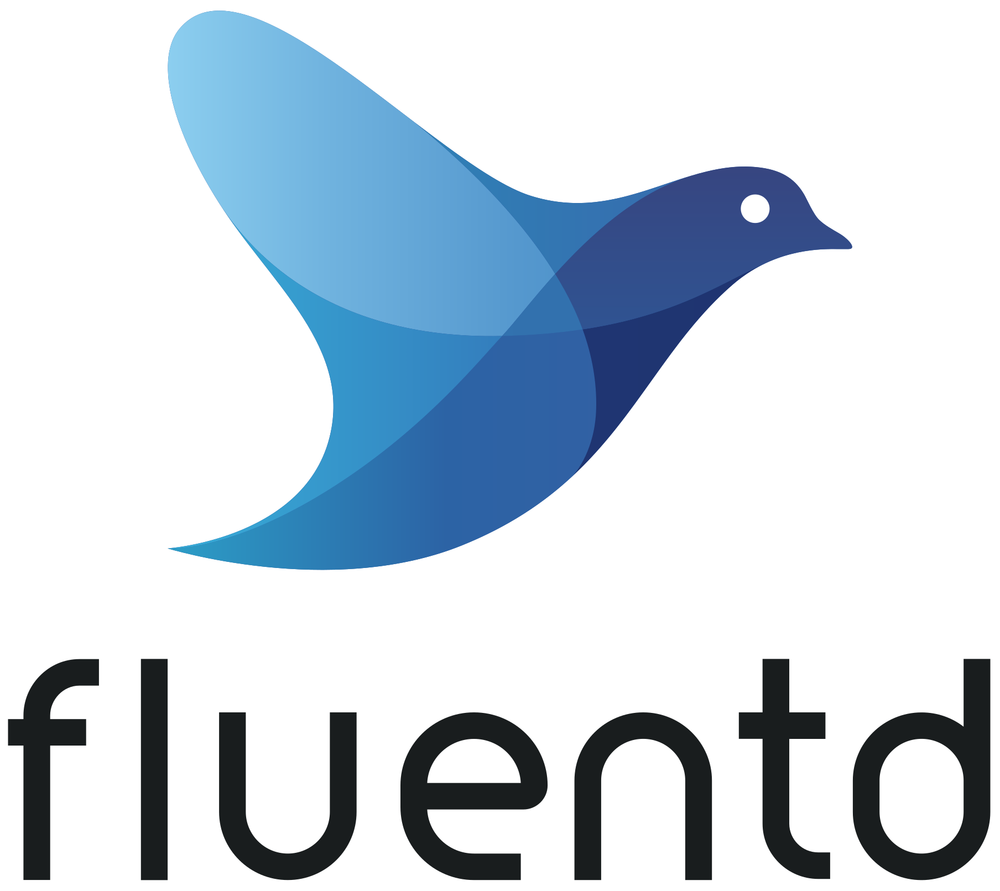

Kubernetes i CloudNative
Introduction
Wojciech Barczyński - SMACC.io | Hypatos.ai
27 March 2019
Wojciech Barczyński
- Software Developer & System Engineer
- Now at Machine-Learning FinTech
- Since 2016 working with K8S
... - 2014
- Everybody talks services but....
- No simple platform for operating services
- Mesosphere!
- Docker swarm not perfect
- We learn so much in Google (Borg) and other companies
Docker like RoR change
Kubernetes
- Service oriented
- Battery for 12factor apps
- Orchiestration
- Focus on simplicity [*]
[*] In spirit what Docker brought us
The twelve factor apps
- Services to operate service, test, etc.
- Services with low TCO.
- Published by Heroku
- ps. No free lunch
Kubernetes

make docker_push; kubectl create -f app-srv-dpl.yaml
Scale up! Scale down!

kubectl --replicas=3 -f app-srv-dpl.yaml
Resilience!

kubectl --replicas=3 -f app-srv-dpl.yaml
Resilience!

kubectl --replicas=3 -f app-srv-dpl.yaml
Deployment and Pods

Deployment.yml
apiVersion: apps/v1
kind: Deployment
metadata:
name: demo-api
labels:
app: demo-api
spec:
replicas: 3
strategy:
type: Recreate
selector:
matchLabels:
app: demo-api
template:
metadata:
labels:
app: demo-api
spec:
containers:
- name: app
image: wojciech11/api-status:1.0.0
ports:
- containerPort: 80Service and pods

Service matches pods based on labels
Service.yml
apiVersion: v1
kind: Service
metadata:
name: demo-api
spec:
ports:
- port: 80
protocol: TCP
selector:
app: demo-api
type: LoadBalancerService
curl http://users/list
Load balanced inside cluster!
How get user requests?

Basic Concepts
| Name | Purpose | |
|---|---|---|
| Service | Interface | Entry point (Service Name) |
| Deployment | Factory | How many pods, which pods |
| Pod | Implementation | 1+ docker running |
Prometheus
Best in class monitoring and alerting
Fluentd
combined with ElasticSearch and Kibana
Etcd
Distributed key-value store.Alternative: Consule, Zookeeper
Ingress/Proxy
other: Nginx, Traefik
Hottest!
Not in CloudNative Foundation
Tracing
the last piece for observability, read this blog
K8S Package manager
I do not recommend to use
Much more
- Kubeless/OpenFaaS for Serverless
- Kubeflow/Pachyderm for Machine Learning
- VirtualMachines with K8S - kata, kubevirt
Common
- Simple (reasonable) to run
- Focus on simplicity in operating at scale
How to start
as-a-service
- Google - GCE
- Azure - AKS
- Amazon - EKS
A lot of installers as well. See also rancher.
At home
- Mini-kube
- ...
A lot of installers as well
and hide it!
your-platform.git
git tagandpush- branches: dev, staging, master
- Generated k8s files
- PR to production
Similar to the Kelsey Hightower approach
Kubernetes
- Pure and generated
from simple templates with ${ENV_VAR} - 2x kubernetes operators
Kubernetes vs Startup
- VM with application run in dockers
- After MVP version X, go to k8s
- Learn as-you-go
- Do not get high on all CN projects :)
Thank you. Questions?
github.com/wojciech12
Backup Slides
Kubernetes Concepts+
Pods
- See each other on localhost
- Live and die together
- Can expose multiple ports

Side-cars